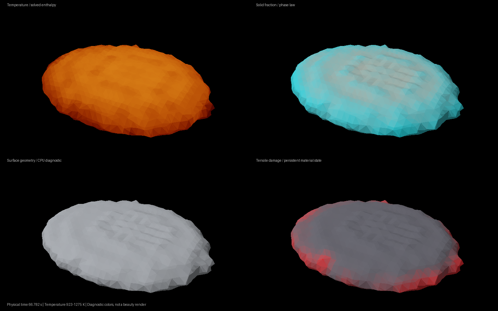
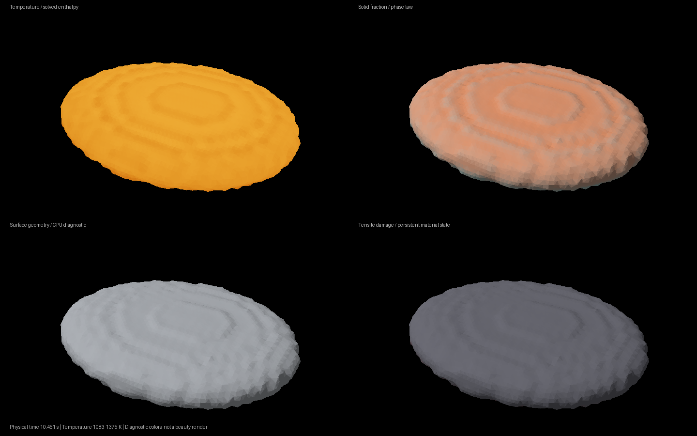

Crust mechanics update.
The solver now retains solid crust stress, transfers viscous drag from the melt, and separates grid supports across a partial crack. The resulting lava geometry is still below the requested visual quality.
Not accepted for final rendering.
23 component checks pass. The current grid comparison still fails: 19.53% RMS speed difference against a 15% gate. The particle-domain surface trial was rejected for visible grid artifacts.
Changes kept
- Solid crust retains shear stress instead of relaxing with the melt’s viscosity.
- Melt and crust exchange equal and opposite viscous forces; dissipated work returns to heat.
- A crack can separate locally while the crust remains connected beyond its tip.
- Contact uses a conditioned implicit solve and a relative support criterion.
Fracture mechanics study
744 material points · 10 mm grid · 66.78 physical seconds

False-color diagnostics from the saved simulation. The surface is still too smooth and coarse for the requested fractured basalt. These two studies show different physical times and are not a matched-frame refinement comparison.Finer early-cooling study
5,860 material points · 5 mm grid · 10.45 physical seconds

False-color diagnostics from the saved simulation. The surface is still too smooth and coarse for the requested fractured basalt. These two studies show different physical times and are not a matched-frame refinement comparison.What still needs to improve
- Grid convergence: current early-flow RMS difference 19.53% versus the unchanged 15% gate
- Heavy, visibly separated basalt crust is not yet resolved
- No sustained incoming lava in this finite cooling-sample scene
- No complete coupled long lava/gas/bed run
- Interfragment friction, degassing/condensation, full free-energy audit and calibrated material parameters remain unfinished
More render samples would not repair the missing flow source or unresolved fracture geometry. No GPU or final render batch was used for this iteration.
Numerical checks and evidence
| bed exchange | pass |
| contact | pass |
| coupled cooling | pass |
| crystal network | pass |
| enthalpy | pass |
| fracture | pass |
| fracture topology | pass |
| fragment contact | pass |
| gas displacement | pass |
| gas fracture dust | pass |
| gas heat plume | pass |
| gas still air | pass |
| gas thermal exchange | pass |
| gravity | pass |
| implicit fragment contact | pass |
| insulated heat | pass |
| liquid memory | pass |
| local fracture | pass |
| material grid refinement | fail |
| melting reset | pass |
| shear decay | pass |
| solid collision scene | pass |
| stefan | pass |
| transfers | pass |